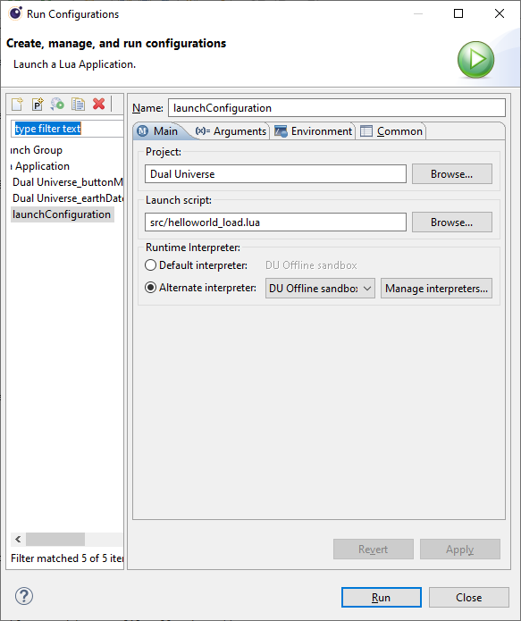
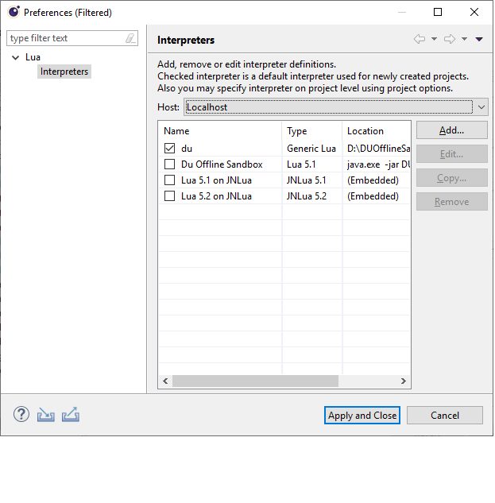
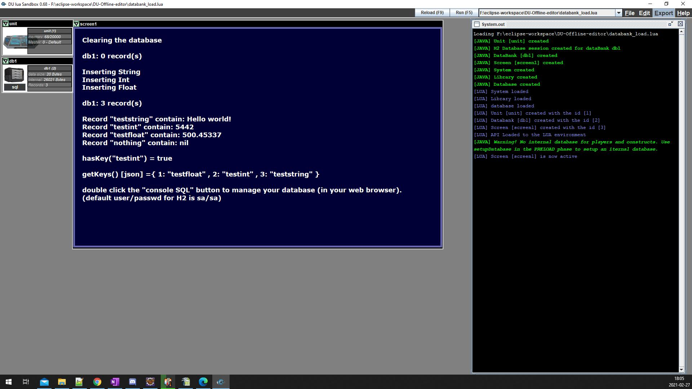
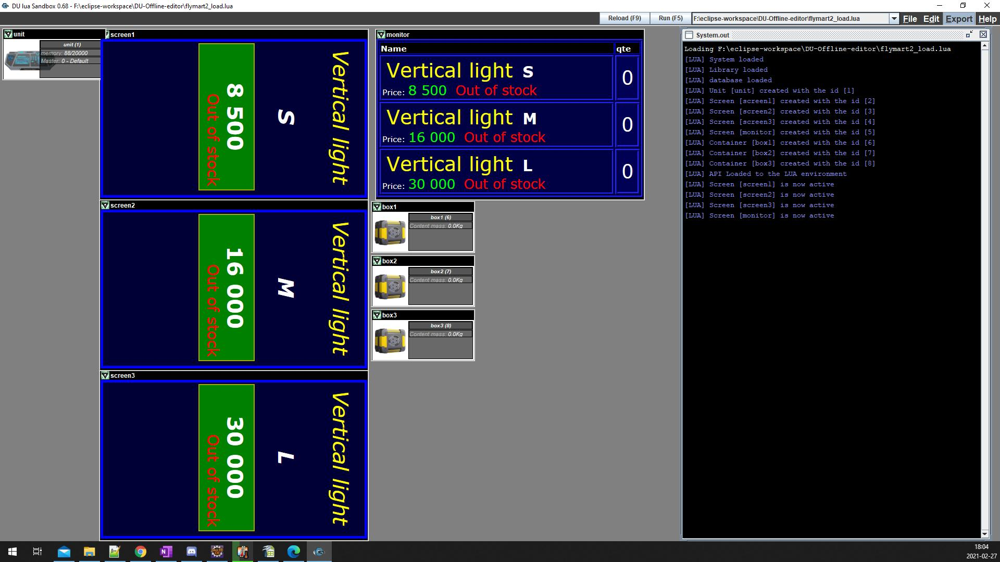
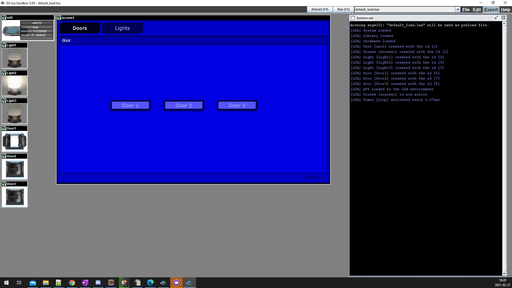
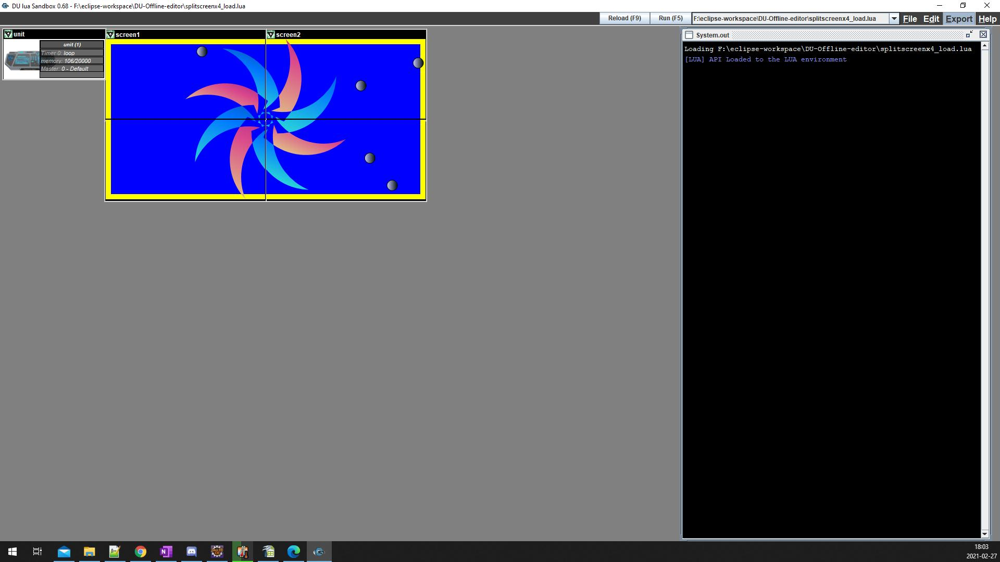
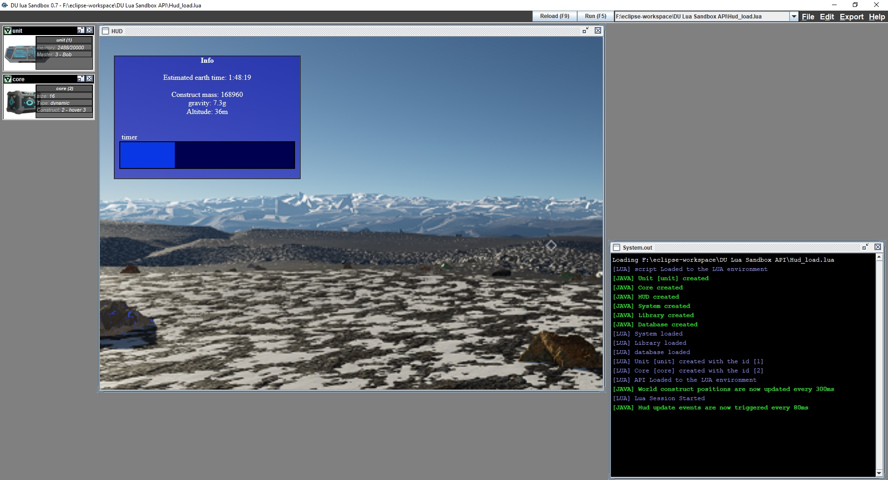
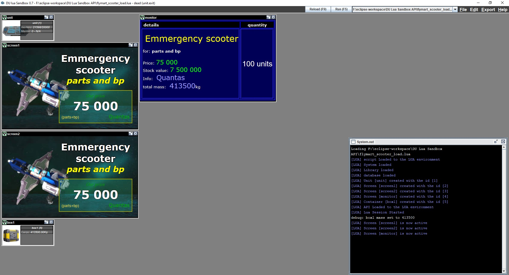
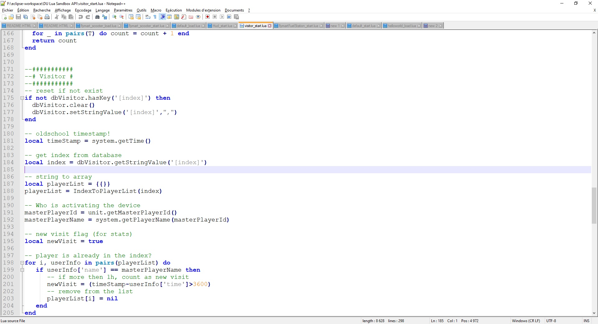
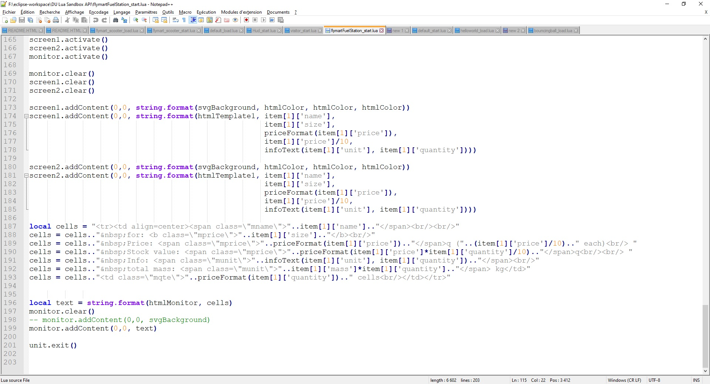

DU Lua Sandbox API
Ce document est un tutoriel pour l'outil de dévelopement DU lua sandbox.
Il s'agit en fait d'un api permettant le dévelopement d'application LUA dans l'univers du jeux Dual universe.
J'ai crée cet API en 2 parties.
1 - Une api LUA contenant (presque) toute les classes de DU. (duElementAPI)
2 - Une api JAVA contenant une sandbox LUA dual universe. (duJavaAPI)
La sandbox permet d'émuler la quasi totalitée des éléments du jeu, des écrans utilisant le html5 (incluant le svg) allant jusqu'au la base de donnée interne (database.getPlayer, database.getConstruct, databse.getElement). Il imite le fonctionnement en temp reel de plusieurs éléments du jeu.
Il est simple à utiliser. La configuration ce fait à partir de fichier lua nommé Preload (voir la section preload de ce document).
Le code est en open source. Il est accèssible via ce github
A qui s'adresse cet outil.
L'api à été concu pour travailler sur des écrans de dual universe (L'élément in game).
Il à été conçu pour travailler en mode "projet". La versatilitée du fichier de chargement (preload) permet de créer des librairies de fonctions
et de faire du code réutilisable. Les scripts sont automatiquement intégré lors de l'exports. La sandbox à particulièrement été conçu pour concevoir des applications ingame ou même des jeux.
L'élément databank est déja implémenté à 100%.
Il n'est pas encore assez avancé pour être efficace au niveau des systèmes de vol, mais il le sera probablement sur le long (avec de l'aide).
Installation
Décompressez le contenu du fichier DUOfflineSandbox.zip à l'emplacement de votre choix. le répertoire ./src et son contenu contient l'api et il est requis.
retourner à l'index
Utilisation en mode stand alone
pour l'ancer la sandbox. Cliquez sur \DUOfflineSandbox\dusandbox.exe
La boite a outil de l'application permet de relancer le script en appuyant sur "Reload (F9)" ou de charger un nouveau script par la bar de lancement. "RUN (F5)"
Utilisation dans Eclispe LDT (mode interpreteur)
La sandbox peut être utilisé comme interpreteur LUA dans Eclipse LDT.
- Créez un nouveau projet avec comme source, le répertoire d'installation de l'api.
-
Créez un lunch configuration pour chaques fichiers de preload. (menu Run->Run configuration)
 -
accédez à la liste des interpreters. (menu Run->Run configuration->bouton Manage interpreters)
 - Ajouter la sandbox dans la liste d'interpreters. (menu Run->Run configuration->bouton Manage interpreters->Add

créez un lunch configuration pour chaques fichiers de preload. Cliquez sur le tabb du fichier preload puis cliquez sur RUN (ctrl-F11) pour lancer le projet.
retourner à l'index
Captures d'écrans
|
databanks fonctionnelle  exemple de système d'inventaire  Création d'interface utilisateur avec souris fonctionnelle.  Timers et update qui permet d'animer des svg en temp reel.  |
Hud fonctionnelle  Paufiner votre code grace des fonctions de débuguage  Imitation du codex lua de dual universe  des exemples de code  |
PRELOAD
Le preload est un fichiers de configuration en LUA. Il configure l'environnement et ajoute les éléments à la sandbox (door, unit, databank....)
Par standard, le fichier de preload est nomé [nomprojet]_load.lua. Il est utilisé pour démarrer votre projet.
Le preload charge les fichiers LUA pour les évènements (start, tick, stop...) relié aux scripts. Il sert aussi pour configurer la sandbox et rajouter des joueurs et constructs.
Toute les fonctions du LUA sont disponnible. Y compris les fonctions de lecture/ecriture du système de fichier et les fonction lua "dofile" et load.
A la fin du preload, seul les configurations aquise et les éléments ajoutés sont conservés. La session LUA est remise à zéro puis la sandbox est lancée (avec l'environnement du jeu).
Evidemment, les fonctions utilitaires lié au chargement du preload ne sont pas utilisable dans l'environnement de jeu.
Notez qu'il y a une librairie json disponnible dans la session du preload. (https://github.com/rxi/json.lua)
Example de fichier preload
verboseLua(1)
verboseJava(0)
-- scripts de l'unit
UnitStart = [[
screen1.activate()
screen1.addContent(0,0,"hello world")
]]
UnitStop = "print('closing')"
-- ajout de l'unit
obj = Unit(UnitStart, UnitStop)
-- ajout d'un écran
obj = ScreenUnit('screen1', 1024, 612)
moveElement(obj, 300, 5)
retourner à l'index
Fonctions du preload
retourner à l'index
Outils
| Argument | Type | Description |
|---|---|---|
| screenId | numéro de l'écran physique |
| Argument | Type | Description |
|---|---|---|
| status | 1 pour activer les messages lua |
| Argument | Type | Description |
|---|---|---|
| status | 1 pour activer les messages java |
| Argument | Type | Description |
|---|---|---|
| fichier | fichier LUA à charger. |
| Valeur de retour | Description |
|---|---|
| texte | fichier text chargé. |
| Argument | Type | Description |
|---|---|---|
| msg | Message à afficher. |
| Argument | Type | Description |
|---|---|---|
| msg | Message à afficher. |
| Argument | Type | Description |
|---|---|---|
| id | Id de l'élément à déplacer | |
| x | Position X de la nouvelle emplacement. | |
| y | Position Y de la nouvelle emplacement.. |
| Argument | Type | Description |
|---|---|---|
| temps | durée de la pause en ms. |
retourner à l'index
Configuration
Nécessaire à l'utilisation des emitters/receivers.
| Argument | Type | Description |
|---|---|---|
| id | L'id de l'élément "receiver" qui recevra les messages. | |
| channel | Nom de canal du message | |
| script | Le script à assigner à l'event. |
| Argument | Type | Description |
|---|---|---|
| player | array contenant les informations des joueurs. (voir rubrique "dummy players") | |
| construct | array contenant les informations des constructs. (voir rubrique "dummy constructs") | |
| MasterPlayerId | Id du joueur actif (joueur ayant activé l'unit) selon l'array "player". |
| Argument | Type | Description |
|---|---|---|
| script | Script de l'évènement update. optionnel. | |
| x | Position x de l'écran hud. optionnel. | |
| y | Position y de l'écran hud. optionnel. | |
| width | largeur. optionnel. | |
| height | Hauteur. optionnel. |
| Argument | Type | Description |
|---|---|---|
| id | Id de l'unit servant à la maintenance. | |
| nom | Nom du timer à utliser pour la fonction setTimer | |
| script | Script LUA à utiliser pour le timer. |
retourner à l'index
Éléments
| Argument | Type | Description |
|---|---|---|
| name | nom de l'élément. | |
| label | Libellé du bouton. | |
| script | Script LUA à utiliser pour l'event du bouton. |
| Valeur de retour | Description |
|---|---|
| id | Id de l'élément crée. |
| Argument | Type | Description |
|---|---|---|
| name | nom de l'élément. |
| Valeur de retour | Description |
|---|---|
| id | Id de l'élément crée. |
| Argument | Type | Description |
|---|---|---|
| size | Taille du core par facteur de 16. (xs = 16) | |
| constructType | dynamic ou static | |
| g | La gravitée local. | |
| selfConstructId | Assigne le core à un construct. L'id correspond aux constructs de la base donnée interne (voir SetupDatabase(...)). |
| Valeur de retour | Description |
|---|---|
| id | Id de l'élément crée. |
| Argument | Type | Description |
|---|---|---|
| name | Nom de l'élément. |
| Valeur de retour | Description |
|---|---|
| id | Id de l'élément crée. |
| Argument | Type | Description |
|---|---|---|
| name | Nom de l'élément. |
| Valeur de retour | Description |
|---|---|
| id | Id de l'élément crée. |
| Argument | Type | Description |
|---|---|---|
| name | Nom de l'élément. |
| Valeur de retour | Description |
|---|---|
| id | Id de l'élément crée. |
| Argument | Type | Description |
|---|---|---|
| name | Nom de l'élément. |
| Valeur de retour | Description |
|---|---|
| id | Id de l'élément crée. |
| Argument | Type | Description |
|---|---|---|
| name | Nom de l'élément. |
| Valeur de retour | Description |
|---|---|
| id | Id de l'élément crée. |
| Argument | Type | Description |
|---|---|---|
| name | Nom de l'élément. |
| Valeur de retour | Description |
|---|---|
| id | Id de l'élément crée. |
| Argument | Type | Description |
|---|---|---|
| name | Nom de l'élément. |
| Valeur de retour | Description |
|---|---|
| id | Id de l'élément crée. |
| Argument | Type | Description |
|---|---|---|
| name | Nom de l'élément. |
| Valeur de retour | Description |
|---|---|
| id | Id de l'élément crée. |
| Argument | Type | Description |
|---|---|---|
| name | Nom de l'élément. | |
| range | Distance de détection. | |
| scriptEnter | Script de l'event Enter. | |
| scriptExit | Script de l'event Exit. |
| Valeur de retour | Description |
|---|---|
| id | Id de l'élément crée. |
| Argument | Type | Description |
|---|---|---|
| name | Nom de l'élément. |
| Valeur de retour | Description |
|---|---|
| id | Id de l'élément crée. |
| Argument | Type | Description |
|---|---|---|
| name | Nom de l'élément. | |
| int | Dimension horizontal de l'écran. | |
| int | Dimension vertical de l'écran. |
| Valeur de retour | Description |
|---|---|
| id | Id de l'élément crée. |
| Argument | Type | Description |
|---|---|---|
| name | Nom de l'élément. |
| Valeur de retour | Description |
|---|---|
| id | Id de l'élément crée. |
| Argument | Type | Description |
|---|---|---|
| scriptStart | Script à associer à l'event start. | |
| scriptStop | Script à associer à l'event stop |
| Valeur de retour | Description |
|---|---|
| id | Id de l'élément crée. |
retourner à l'index
Examples
Des examples de code source sont disponnible dans le répertoire de l'application.
- helloworld_load.lua: Un simpe helloworld.
- helloworld2_load.lua: Un simpe helloworld. un peu plus complexe.
- bouncingball_load.lua: Un test d'animation utilisant du svg.
- buttonManager_load.lua: un button manager simple d'utilisation.
- databank_load.lua: utilisation d'une databank.
- debug_load.lua: quelques fonctions de debuguage.
- emitter_load.lua: utilisation d'un emitter.
- Hud_load.lua: utilisation d'un hud.
- radar_load.lua: utilisation d'un radar.
- mapview_load.lua: Radar de type mapview (vue de haut)
- flymartFuelStation_load.lua: Un exemple de système d'inventaire.
- visitor_load.lua: Un log de visiteur. A activer avec un detector.
- splitscreenx4_load.lua: Un test d'animation sur un affichage à 4 écran.
- tricks_and_goodies.lua: Des trucs utile, trouvé un peu partout..
retourner à l'index
Exporter un script
Les commandes d'exports de la toolboar, permet d'accéder à une version du script LUA pouvant facilement être copié vers l'éditeur de Dual Universe.
L'export compile toute les fichiers .lua du projet (librairies, évènements...) en un seul fichier.
La fonction d'exports de l'api permet d'accéder au code source de l'API LUA. Il peut parfois vous permettre de débuguer vos scripts et peut permettre de comprendre le fonctionnement interne de l'API.
Vous pouvez aussi exporter en JSON. L'implémentation n'est pas encore complète (C'est dans le haut de la liste de prioritée). Bientôt, vous pourrez copier directement, la string JSON dans Dual universe. (C'est déjà possible avec plusieurs des examples fourni (incluant visitor_load et flymart2).)
retourner à l'index
Dummy constructs
Les dummy constructs servent à remplir la base de donnée interne du jeu. Que ce soit pour la database de DU (getPlayer(), getConstruct()) ou les radars.
Pour activer la base de donnée interne, vous devez utiliser la fonction SetupDatabase du fichier preload.
les arrays suivent une structure assez simple.
Exemple d'initialisation de dummy players et de dummy constructs:
playerList[1] = {id = 0, name = 'unreachable', worldPos = {0, 0, 0}}
playerList[2] = {id = 1, name = 'Nmare418', worldPos = {0, 0, 0}}
constructList = {}
-- Static construct
constructList[1] = {id = 1,
owner = 7,
name = 'Base 1',
ctype='static',
pos = {133, -6233, 66},
size = {115, 134, 122},
speed = {0, 0, 0},
mass = 2101.323}
-- moving construct
constructList[2] = {id = 2,
owner = 2,
name = 'Ship 1',
ctype='dynamic',
pos = {4353, 3233, 59},
size = {15, 6, 12},
speed = {25, 34, 0},
mass = 12.43}
-- unreachable (player offline)
constructList[3] = {id = 2,
owner = 0,
name = 'Ship 2',
ctype='dynamic',
pos = {4353, 3233, 59},
size = {15, 6, 12},
speed = {0, 0, 0},
mass = 12.43}
-- setup the internal database. playerlist, constructlist, main player
setupDatabase(playerList, constructList, 1)
retourner à l'index
BD SQL interne (H2)
Les dataBanks utilisent un système de base de donnée interne. Il est semblable à des base de donnée relationnel (mysql, oracle, sql server...), mais , mais tiens en mémoire.
Cet outil vous permet de maintenir des bases de données. De copier des tables, copier des données et d'effacer directement le contenue des databanks. Il peut permettre d'exporter des données.
Notez que, le nom de l'élément est aussi le nom de la base de donnée dans H2. Si vous nommez les dataBanks avec le même nom dans 2 projets différents, ils utiliseront la même source de donnée dans la base de donnée H2.
Documentation de H2 H2 Database Engine
Example de requête:
SELECT * FROM DB1;
Notes:
- Outil admin: Console H2 - (attention: une sandbox ayant une databank doit être en fonction).
- url JDBC: jdbc:h2:./DataBank.db;AUTO_SERVER=TRUE
- Le login/password par défaut est: sa/sa
retourner à l'index
Bugs
- Après déiconifier un écran, l'affichage glitch si on déplace le frame.
retourner à l'index
A faire (todo)
Liste des objectifs à cour et moyen terme (par prioritée):
- Nav. Les events du clavier.
- Amméliorer l'export JSON. (Support json est encore impartiel)
- Ajoutez de nouveau éléments (dont l'industry).
- Corriger le radar.
- Mettre à jour l'élément conteneur (Liste d'objet). Phase analyse.
- Meilleur gestion des erreurs.
- Rendre l'accès à la bd H2 disponnible pendant la phase PRELOAD.
- Ajout d'un système de configuration.
- Utilisation de plusieurs UNIT. Chaques unit doit avoir sont instance lua.
- Un editeur lua interne.
- Système d'addon en LUA donnant accès aux fonctions de l'API Java ainsi qu'a divers outil.
- Implémentation d'OpenGL?
- Support Linux, tests.
retourner à l'index
Crédits
Conçu par Stéphane Boivin aka Nmare418 (Discord: nmare418#6397).
Développement Java/Lua par Stéphane Boivin.
Illustrations par l'artiste Valérie Dandois (https://valeriedandois.wixsite.com/valdandois)
Fureteur HTML: DJNativeSwing par Christopher Deckers - http://djproject.sourceforge.net/ns/index.html
Interpreter LUA: LuaJ par James Roseborough, Ian Farmer - luaj.org
Base de donnée: H2 par Thomas Mueller, HSQLDB Group - www.h2database.com
Json JAVA: json-simple par Yidong Fang - https://github.com/fangyidong/json-simple
Json LUA: jsonv par rxi - https://github.com/rxi/json.lua
retourner à l'index